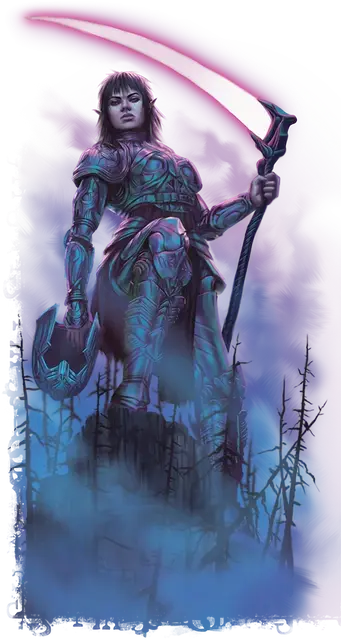

Жнец великан смерти
Death Giant Reaper
Огромный Великан, любое мировоззрение

Класс Доспеха 18 (латы)
Хиты 172 (15к12 + 75)
Скорость 40 футов
| мод | спас | ||
|---|---|---|---|
| СИЛ | 27 | +8 | +8 |
| ЛОВ | 14 | +2 | +2 |
| ТЕЛ | 20 | +5 | +9 |
| мод | спас | ||
|---|---|---|---|
| ИНТ | 18 | +4 | +8 |
| МДР | 16 | +3 | +7 |
| ХАР | 16 | +3 | +7 |
Навыки Восприятие +7, История +8, Магия +8, Скрытность +6
Иммунитет к урону некротическая энергия
Иммунитет к состояниям испуг
Чувства тёмное зрение 120 футов, пассивное Восприятие 17
Языки Великаний
Опасность 12 (8400 опыта)
Бонус мастерства +4
Действия
Мультиатака. Великан совершает две атаки Косой или Снарядом души.
Коса. . Рукопашная атака оружием: +12 к попаданию, досягаемость 15 футов, одна цель. Попадание: 21 (3к8 + 8) рубящего урон плюс 11 (2к10) урона некротической энергией.
Снаряд души. . Дальнобойная атака заклинанием: +8 к попаданию, дистанция 120 футов, одно существо. Попадание: 26 (4к10 + 4) урона некротической энергией. Если цель испугана, то великан получает временные хиты, равные нанесенному урону.
Бонусные действия
Устрашающая телепортация (перезарядка 4-6). Великан волшебным образом телепортируется вместе со всем несомым и носимым снаряжением, на расстояние до 40 футов в незанятое пространство, которое он может видеть. Каждое существо в пределах 10 футов от места, оставленного великаном, должно преуспеть в спасброске Мудрости Сл 16, иначе станет испуганным до конца своего следующего хода.
Описание
Большинству великанов хорошо известно, что не стоит использовать руну смерти регулярно.
- Дианкастра
"Хорошо известно”? Возможно, но нельзя отрицать, что великаны смерти отлично умеют с ней управляться.
- Бигби
Давным-давно большая группа облачных великанов отправилась в Царство Теней в поисках способа сохранить свою рушащуюся империю. Отчаявшись спасти себя и свой уклад жизни, они коллективно заключили пари с Королевой Воронов, таинственным богом смерти и памяти, обитающим на этом плане. Рассказы об этом пари и его исходе разнятся: одни говорят, что Королева Воронов отвечала на все загадки, которые задавали великаны, пока они не падали от изнеможения, в то время как другие описывают серию все более невероятных событий, благоприятствующих Королеве Воронов в каждом пари. Что несомненно, так это то, что великаны сильно недооценили Королеву Воронов. Когда они проиграли свое пари, Царство Теней стало их домом, и с тех пор они неохотно служат Королеве Воронов.
Со временем Царство Теней преобразило этих великанов; их тела высохли, а цвет лица приобрел темно-фиолетовый оттенок. Они стали первыми великанами смерти, а их потомки по сей день бродят по Царству Теней, разыскивая, как на том плане, так и на Материальном, души, которые могли бы понравиться их божественной королеве.
Жнец Великан смерти
Жнецы великанов смерти владеют массивными косами и носят доспехи, напоминающую панцири гигантских насекомых. Они владеют магией тени, которая позволяет им принимать ужасающий облик и исчезать, а также превращать тени в ужасающие сгустки энергии, которые высасывают энергию из их жертв.